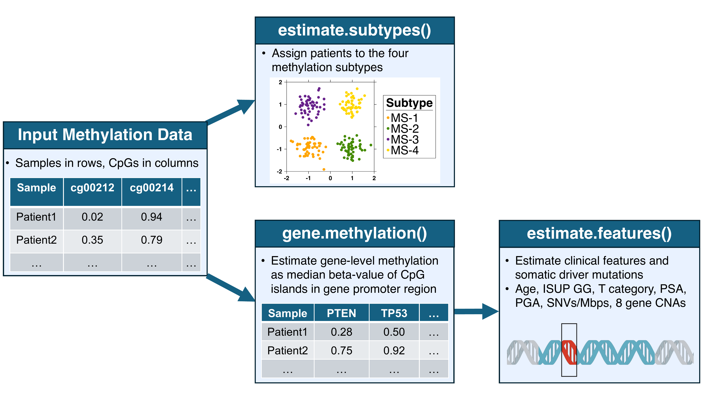

Introduction
Jaron Arbet
2025-02-14
Introduction.Rmd1 Background
The PrCaMethy package provides resources for predicting
clinical and molecular features from prostate cancer DNA methylation
data. Here is an overview of this vignette:
- Input data explains the required format of the input data
-
estimate.subtypesassigns patients to one of four prostate cancer DNA methylation subtypes. -
gene.methylationcalculates gene-level methylation -
estimate.featurespredicts clinical and molecular features - Quick start: putting it all together gives a concise example for how to use the functions of this package.
An overview of the 3 main R functions is shown in the diagram below:

2 Input data
Users input a data.frame containing beta-values
(continuous proportions from 0 to 1) of CpG
sites from the Illumina Infinium Methylation 450K BeadChip array. A
list of these CpGs and their annotation data can be obtained from the IlluminaHumanMethylation450kanno.ilmn12.hg19
R package.
Ideally, the user would have all ~480k CpGs from the Illumina 450K methylation array. However, the functions in this package are written to try and estimate as many features as possible given the CpGs you have.
Here is an example dataset used throughout this tutorial:
## [1] 2 93031
example.data[,1:5];## cg00212031 cg00214611 cg01707559 cg02839557 cg02842889
## TCGA-CH-5739 0.7147803 0.02184841 0.05281749 0.01970460 0.0284529
## TCGA-HC-7079 0.0385789 0.02315141 0.09531891 0.03250703 0.0298547Notice the patients are in rows (rownames give patient ids) and CpGs are in columns with CpG ids as the column names.
3
estimate.subtypes
After making sure your methylation dataset is in the correct format
(see Input data), then you can use
estimate.subtypes to assign each patient to one of four
prostate cancer DNA methylation subtypes (named ‘MS-1’ to ‘MS-4’). The
subtypes are derived in a forthcoming
manuscript.
First, let’s check whether we have the required CpGs for predicting the subtypes:
check <- validate.subtype.model.cpgs(example.data);
check$val.passed;## [1] TRUE-
check$val.passeda logical indicating whether the data passed validation -
check$required.cpgsa vector of CpG ids that are required for predicting the subtypes -
check$missing.cpgsa vector of CpG ids that are required but completely missing in the data -
check$required.cpgs.with.high.missinga vector of CpG ids that are required and have a proportion of missing values greater thanprop.missing.cutoff(default is 0.3)
Given that the validation passed, we have all required CpGs for predicting the subtypes:
subtypes <- estimate.subtypes(
methy.data = example.data
);
subtypes;## subtype
## TCGA-CH-5739 MS-3
## TCGA-HC-7079 MS-2From our manuscript, the subtypes are interpreted as follows:
- MS-1 and MS-2 had better prognosis with MS-2 being most similar to normal tissue
- MS-4 had the highest risk of biochemical disease recurrence, followed by MS-3.
- MS-4, followed by MS-3, had higher risk of copy number alterations, somatic driver mutations and higher global mutation density.
4
gene.methylation
Before we can predict other clinical and molecular features, we need to calculate gene-level methylation. Specifically, gene-level methylation is calculated as the median beta-value among CpG islands in the gene promoter region.
To calculate the gene-level methylation, you would run the following code (this may take several minutes):
example.data.gene.methy <- gene.methylation(example.data);However, to save time, we precomputed the above dataset which you can use for the rest of the tutorial:
## [1] 2 13622
example.data.gene.methy[,1:5];## NIPA2 CNBP DDX55 MRPS25 MAEL
## TCGA-CH-5739 0.02423149 0.04711574 0.02644465 0.04235761 0.9631823
## TCGA-HC-7079 0.01747738 0.04769987 0.01902647 0.03233640 0.9473169
5
estimate.features
Now that we have gene-level methylation data, we can predict several clinical and molecular features. The models used to predict these features were derived and validated in a forthcoming manuscript.
Currently the package supports predicting the following features:
data(all.models, package = 'PrCaMethy');
features <- names(all.models);
features <- sapply(
X = features,
FUN = function(x) {
n.required.genes <- length(all.models[[x]]$xNames);
}
);
features <- data.frame(feature = names(features), n.required.genes = features);
rownames(features) <- NULL;
features[order(features$n.required.genes),];## feature n.required.genes
## 4 psa.categorical 10
## 7 NKX3-1.cna.loss 10
## 8 MYC.cna.gain 10
## 11 RB1.cna.loss 10
## 9 PTEN.cna.loss 50
## 10 CDKN1B.cna.loss 100
## 2 ISUP.grade 1000
## 5 pga 1000
## 6 CHD1.cna.loss 1000
## 1 age.continuous 5000
## 3 t.category 5000
## 14 log2p1.snvs.per.mbps 5000
## 12 CDH1.cna.loss 13603
## 13 TP53.cna.loss 13603-
n.required.geneslists the number of required genes to predict that feature. You can see the required gene names bylapply(all.models, function(x) x$xNames). - Feature names with prefix “log2p1” means a \(log_2(x + 1)\) transformation was applied.
To check whether you have the required genes to predict each feature:
check <- validate.gene.methy.data(
gene.methy.data = example.data.gene.methy,
models = all.models
);-
check$val.passedis a boolean vector indicating whether you have the required genes to predict all features. -
check$features.you.can.predictlogical vector indicating which features you can predict (i.e. you have the required genes with missing data rates <prop.missing.cutoff) -
check$required.genesis a list of required genes for predicting each feature. -
check$missing.genesis a list of missing genes that are required for predicting each feature. -
check$required.genes.with.high.missingis a list of genes that you have but that have high missing data (i.e. proportion of missing data exceeds the cutoff to argumentprop.missing.cutoff, default = 0.3)
check$val.passed;## [1] TRUEGiven that our data passed the validation, this means we can predict all features for our dataset:
features <- estimate.features(
gene.methy.data = example.data.gene.methy,
models = all.models
);
str(features$features);## 'data.frame': 2 obs. of 14 variables:
## $ age.continuous : num 61.5 60.7
## $ ISUP.grade : Factor w/ 5 levels "ISUP1","ISUP2",..: 3 2
## $ t.category : Factor w/ 4 levels "T1","T2","T3",..: 3 2
## $ psa.categorical : Factor w/ 3 levels "psa_lt_10","psa_10_19.9",..: 1 1
## $ pga : num 25.6 10.9
## $ CHD1.cna.loss : Factor w/ 2 levels "Yes","No": 2 2
## $ NKX3.1.cna.loss : Factor w/ 2 levels "Yes","No": 2 2
## $ MYC.cna.gain : Factor w/ 2 levels "Yes","No": 1 2
## $ PTEN.cna.loss : Factor w/ 2 levels "Yes","No": 2 2
## $ CDKN1B.cna.loss : Factor w/ 2 levels "Yes","No": 2 2
## $ RB1.cna.loss : Factor w/ 2 levels "Yes","No": 1 2
## $ CDH1.cna.loss : Factor w/ 2 levels "Yes","No": 2 2
## $ TP53.cna.loss : Factor w/ 2 levels "Yes","No": 2 2
## $ log2p1.snvs.per.mbps: num 1.026 0.5456 Quick start: putting it all together
In the previous sections, we called different validate
functions to verify our data was correct. This was for educational
purposes, but actually the validate functions are called
automatically by other functions, thus we can simplify our code:
library(PrCaMethy);
### prepare your data
# patients are in rows (rownames give patient ids) with CpG ids as the column names.
data(example.data, package = 'PrCaMethy');
example.data[,1:5];
### predict methylation subtypes
subtypes <- estimate.subtypes(
methy.data = example.data
);
table(subtypes$subtype);
### calculate gene methylation data
example.data.gene.methy <- gene.methylation(example.data);
example.data.gene.methy[,1:5];
### predict clinical and molecular features
features <- estimate.features(
gene.methy.data = example.data.gene.methy,
models = all.models
);
str(features$features);Lastly, you can merge the predicted subtypes and features into a
single data.frame:
results <- merge(
x = subtypes,
y = features$features,
by = 'row.names',
all = TRUE
);
str(results);## 'data.frame': 2 obs. of 16 variables:
## $ Row.names : 'AsIs' chr "TCGA-CH-5739" "TCGA-HC-7079"
## $ subtype : Factor w/ 4 levels "MS-1","MS-2",..: 3 2
## $ age.continuous : num 61.5 60.7
## $ ISUP.grade : Factor w/ 5 levels "ISUP1","ISUP2",..: 3 2
## $ t.category : Factor w/ 4 levels "T1","T2","T3",..: 3 2
## $ psa.categorical : Factor w/ 3 levels "psa_lt_10","psa_10_19.9",..: 1 1
## $ pga : num 25.6 10.9
## $ CHD1.cna.loss : Factor w/ 2 levels "Yes","No": 2 2
## $ NKX3.1.cna.loss : Factor w/ 2 levels "Yes","No": 2 2
## $ MYC.cna.gain : Factor w/ 2 levels "Yes","No": 1 2
## $ PTEN.cna.loss : Factor w/ 2 levels "Yes","No": 2 2
## $ CDKN1B.cna.loss : Factor w/ 2 levels "Yes","No": 2 2
## $ RB1.cna.loss : Factor w/ 2 levels "Yes","No": 1 2
## $ CDH1.cna.loss : Factor w/ 2 levels "Yes","No": 2 2
## $ TP53.cna.loss : Factor w/ 2 levels "Yes","No": 2 2
## $ log2p1.snvs.per.mbps: num 1.026 0.545